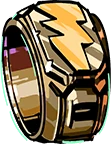
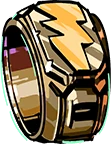
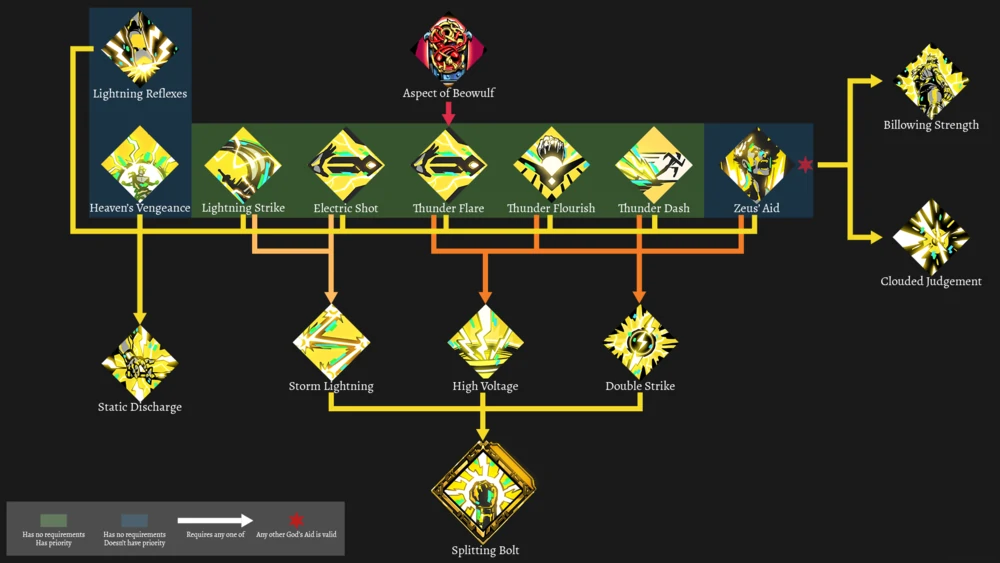

-
Recompensa de zeus
Icono de zeus
Icono forjado
- Afinidad
a
Si se le da néctar
 , Zeus le dará el Thunder Signet 
, Zeus le dará el Thunder Signet 
El indicador de afinidad de Zeus tiene un máximo de 7 corazones.
- Historia
a
-
Sabiendo que su hermano estaba interesado en Perséfone y sintiéndose arrepentido de que Hades se hubiera quedado a cargo de supervisar el inframundo, Zeus secuestró a la hija de Deméter como un "premio de consolación" para su hermano. Un acto que su hermano nunca le había pedido/insinuado/querido que hiciera. Si bien Perséfone estaba feliz por cualquier razón de dejar el Olimpo (un hecho del que Zeus estaba al tanto) y se fue con él de buena gana, ella señala que incluso si no quisiera ir, Zeus aún se la habría llevado.
Este acto condujo a su alejamiento de Hades ya que, aparte de su disgusto por que Perséfone fuera tratada como un objeto, este "regalo" puso a Hades en una posición difícil; Deméter se enfurecería por el secuestro de su hija, pero como Perséfone NO QUERÍA regresar al Olimpo, no podía enviarla de regreso.
Como resultado, si los dioses olímpicos descubrieran la verdad, estallaría una guerra entre los dioses olímpicos, ellos mismos y los dioses ctónicos del inframundo. Ya en el límite de tolerancia por las travesuras egoístas de Zeus y dado que había muchas otras opciones que Zeus podría haber hecho para unir a Hades y Perséfone SIN poner al mundo en peligro, Hades cortó a Zeus y al resto del Olimpo de su vida.
-
- Personalidad
a
-
En la superficie, Zeus parece sociable, afable y paternal, especialmente en contraste con su brusco hermano. Pero mientras que su hermano Hades es amable y justo debajo de su exterior, Zeus es todo lo contrario; En esencia, Zeus es un dios egoísta que hace lo que quiere sin tener en cuenta los sentimientos de los demás o las posibles consecuencias de sus acciones. Incluso sus actos de "bondad" tienen sus raíces en el egoísmo. Si no se hace por su propio interés, se basan en lo que ÉL siente que es amable, no en lo que otros quieren e incluso tomarán represalias contra aquellos que desprecian sus regalos.
Nunca acepta la responsabilidad de sus acciones, incluso pareciendo incapaz de reconocer que juega un papel en ellas.
-
- Entrada del códice
a
-

' ...El Amo de los Cielos, dios entre los dioses; gran parte de mi vida mortal fue impactada por él. Y ahora, incluso en la muerte, sirvo a su hermano. No creo que tenga mucho que decir a favor del Señor Zeus que no sea ya ampliamente conocido. Una vez, derrocó a los titanes, sus propios antepasados, para arrebatar el control de todos los cielos y la tierra. Todavía preside como soberano sobre todo. Lord Hades no siente amor por él, por razones que apenas puedo comenzar a contemplar; es como si el Señor Hades decidiera voluntariamente no juntarse con los olímpicos. '
-
- Mecanica
a
-
Las bendiciones de Zeus giran principalmente en torno a dos efectos principales. El primero es el relámpago en cadena . Los efectos de relámpagos en cadena rebotarán entre los enemigos, infligiendo daño a cada enemigo al que reboten. Además, Zeus también puede otorgar efectos de rayos , que hacen que un rayo golpee a un enemigo y cause daño en un área a su alrededor. Ambos se consideran "efectos de relámpagos" y pueden mejorarse o amplificarse con otras bendiciones de Zeus, como Descarga estática, que agrega el efecto de sacudida a todos sus efectos de relámpagos.

-